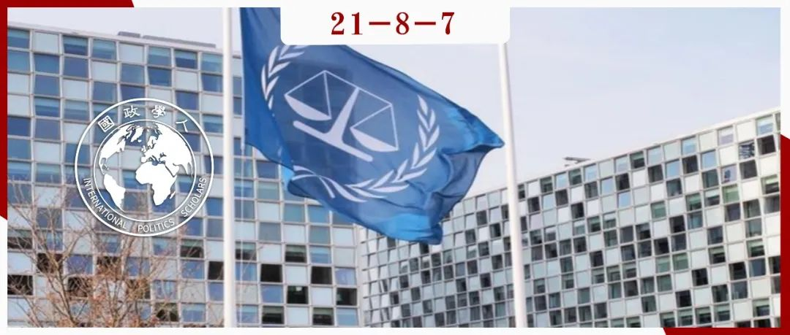

收录于合集 #理论研究 96个

作品简介
作者： Michal Ben-Josef Hirsch，美国萨福克大学（Suffolk University）政治学和法学研究系助理教授，主要研究兴趣包括国际关系理论、国际规范、转型正义和巴以冲突等；Jennifer M. Dixon，维拉诺瓦大学（Villanova University）政治学系副教授，主要研究兴趣包括记忆政治、大屠杀和群体暴力，以及国际规范的扩散和影响等。
编译： 陈勇（国政学人编译员，北京大学国际关系学院）
来源： Ben-Josef Hirsch, Michal, and Jennifer M. Dixon. “Conceptualizing and assessing norm strength in International Relations.” European Journal of International Relations 27.2 (2021): 521-547.
归档： 《国际关系前沿》2021年第8期，总第35期

内容提要
什么构成了强规范或弱规范？学界目前在术语上普遍存在不一致，也没有统一的测量标准。本文将规范强度定义为与原则化信念（principled ideas）[1]的集体期望的程度，并通过两个指标进行测量：国际上在某一原则化信念上的一致性（concordance）水平和制度化（institutionalization）程度。通过评估两项转型正义规范：法律问责（legal accountability）和寻求真相（truth- seeking），本文试图说明这一分析框架的适用性和实用性，并在更加普遍的意义上推进有关规范争论、本土化、违反和侵蚀（erosion）的讨论。
文章导读
文章第一部分批判性地评估了现有的研究规范强度的方法，并引入一个新的概念框架。第二节为分析框架中两个指标的操作和汇总提供指导方针。然后，文章分析了法律问责规范和寻求真相规范的强度随时间的变化情况。结论部分强调了本文的理论贡献，并讨论了本文概念化的努力对现有研究的推动作用。
01
规范强度的概念化：超越既有研究
文章认为，主流规范发展的研究路径同时塑造和制约了对规范强度的思考。早期的研究将规范内容视为相对静态的，最近的学术研究探索了规范的意义是如何通过阐释、争论和违反的过程发生变化的（e.g. Sandholtz, 2008; Wiener, 2014）。相比之下，规范强度的定义仍然不够明确，学者们经常提到强化和弱化，强规范和弱规范，但没有给出明确的定义和测量。即使是明确关注规范强度的研究也忽视对该概念进行界定解释或提供明确的评估方法。尽管有些研究试图直接地解决规范强度问题，例如《全球安全研究杂志》（ Journal of Global Security Studies , JoGSS)的一期特刊引入了“规范稳健性（norm robustness）”的四个指标:话语接受；对违规行为的话语反应；合规；执行（Deitelhoff and Zimmermann, 2019)[2]，但作者认为现有研究仍有局限。首先，既有文献经常将规范的采纳、遵守和违反的行为模式作为规范强度的衡量标准，但用行为来度量规范强度是有问题的。其次，现有的方法往往无法分离规范内容和规范强度。第三，JoGSS特刊提出的框架表现了概括规范发展的所有方面与设计一个精简和概括性的框架之间的紧张关系。
基于上述分析，本文的分析框架 将规范定义为集体预期与原则化信念相关的程度 ，包括一致性和制度化两个指标。
一致性（concordance）是国际行为体在适当的情况下引用和接受原则化信念的程度。 一致性通过三种方式考察：（1）分析国际组织（IOs）和国际非政府组织（INGOs）发布的报告或决议的语料库中引用原则化信念的频率和性质；（2）评估相关国际非政府组织和国际组织在多大程度上支持运用和遵守与原则化信念相关的实践；（3）分析国际组织、国际非政府组织和国家回应违背相关信念要求的行为的频率和性质。评估一个原则化信念是否得到认可和支持，最直接的方法是对最相关的国际组织和非政府国际组织发布的所有的，或具有代表性的报告或决议样本进行内容分析。某个原则化信念的一致性水平较低时，国际组织在报告或决议中只有很少或零星的引用，或者是持批评、中立或矛盾态度。此外，相关的国际非政府组织和国际组织将很少或完全不支持采用和遵守与原则化信念相关的实践，违背原则的行为也不会得到行为体的回应。如果规范得到强化，违规行为将更有可能引起国际组织、非政府组织和各国的批评。
制度化（Institutionalization）指一种原则化信念被编入国际法的程度 ，主要有两种评估方式：（1）考察已存在的国际条约、公约和/或司法判例。在这一方面，制度化的程度差异表现在两个方面：第一，某项原则通过司法裁决（judicial decisions）编入法律比在国际条约或公约中正式编纂的制度化形式要弱。第二，如果某项原则已被编入一项已获多数国家批准的国际条约或公约，则其与一项仅在获不到半数合格国家批准的条约中体现的原则相比具有更强的制度化形式。（2）考察已有国际机构的行动，包括促进原则化信念的采纳和实践、监测或评估其遵约行为的情况以及/或制裁违约行为的情况。在较低的制度化水平上，一个原则化信念不太可能在国际法中被直接提及，国际组织也很少推动或监督与之相关的行动。随着规范的加强，一个原则化信念可能会在司法裁决（judicial decisions）中得到初步确认。明确地编入国际法则表明某项规范更加有力，有关条约或公约被广泛批准亦是如此。
02
评估实践中的规范强度
一致性和制度化提供了关于规范强度的不同定性指标。 一致性在非正式层面反映了关于原则化信念的集体期望 ，而制度化则捕捉了表现集体期望的正式过程。它们是离散的，不一定协同或单向变化。文章强调了运用该框架的几个指导原则。首先，由于强度是相对概念，在单一时间和地点评估一项规范的强度既不实际也不可取。第二，一致性和制度化应对与给定原则化信念最相关的行为体和机构进行评估。例如，非政府人权组织和联合国与人权规范有关。第三，强度是连续的概念，没有先验设定的临界点来区分强度的类别。相反，一个规范的强度是随时间或空间的变化而产生强弱变化的。当一致性较低时，一个原则化信念就不是一种规范。
根据上述原则，作者以制度化为Y轴，一致性为X轴绘制了衡量规范强度的坐标系。在非规范（non-norms）到弱规范（weak norms）的区域中，一致性和制度化程度都相对较低。例子包括“保护的责任”、“LGBT+权利”和定点清除（Targeted Killing）；从弱到适度的规范（Weak to moderate-strength norms）具有中等至高水平的一致性和较弱的制度化，或中等至高水平的制度化和较弱的一致性。如反捕鲸规范、反雇佣军规范（anti-mercenary norm）和性别平等规范；中等到高强度的规范（Moderate-strength to strong norms）具有中等到高水平的一致性和制度化。例子包括核不扩散规范、国家主权规范、反对种族灭绝规范、反对酷刑规范和反对奴隶制规范。
03
实例：转型正义的规范体系
转型正义（transitional justice）被定义为“在一段时间的冲突、内战或压迫后出现的，旨在处理违反人权和人道主义法行为的一系列实践、机制和问题。”（Roht Arriaza, 2006: x）。一系列与转型正义相关的原则化信念和实践构成规范体系（normative regime）。作者选取了法律问责和寻求真相的规范作为考察对象，主要分析两种类型的事实证据：每项原则在联合国人权委员会和人权理事会（HRC）自1947年以来的年度报告中引用的频率和内容；以及在大赦国际（Amnesty International，AI）过去25年的报告中的频率和内容。
法律问责的原则
法律问责规范由两个原则化信念构成：普遍管辖权（universal jurisdiction）和对有战争罪和严重违反人权的个体的刑事问责。
一致性方面，纽伦堡和东京审判之后，联合国大会确认了国际法委员会（International Law Commission）阐明的法律责任原则。但直到20世纪80年代末，人权委员会的报告中提及“寻求正义（justice- seeking）”的内容才有所增加。此时法律问责原则的一致性仍然很低。转折发生在20世纪90年代，联合国建立了前南斯拉夫和卢旺达两个国际特别法庭，并着手设立一个常设国际刑事法庭。主要的国际人权组织也在推动对重大人权违法行为的普遍管辖权和个人刑事问责。21世纪初，法律问责原则的一致性提高，国际刑事法院（The International Criminal Court, ICC）于1998年成立，并从2002年开始运作。
制度化方面，纽伦堡和东京审判确立了重要的先例，即根据国际法，个人可以对战争罪和危害人类罪承担刑事责任，为以后法律问责原则的发展奠定了基础。然而，冷战的开始迫使制度化的努力中止。冷战后，在20世纪90年代期间，法律问责原则迅速制度化，到该十年结束时达到高度制度化的水平。这一进程始于联合国安理会于1993年和1994年分别设立的前南斯拉夫和卢旺达问题国际刑事法庭。2005年后，制度化水平进一步提高，引渡某些国家前领导人的案例和一些“混合”（hybrid）国际法庭的设立表明了这一点。
寻求真相的原则
寻求真相的准则产生于“真相权”（right to truth），或者认为人权侵犯的受害者及其家人有权知道他们自己和所爱的人发生了什么的信念。
一致性方面，这一原则最初是在上世纪70年代国际社会对拉丁美洲国家“失踪（现象）”的回应中阐明的。80年代，联合国、美洲人权委员会和欧洲委员会在报告和决议中正式承认。国际非政府组织最初对其持犹豫态度。直到20世纪80年代末，大赦国际和人权观察组织的一般性政策声明强调了寻求真实信息的重要性，标志着国际非政府组织在“真相权”原则上达成一致。20世纪90年代，人们对“真相权”的认识开始扩大，意识到它也是整个社会的权利。到20世纪90年代末和 21世纪初，国际非政府组织接受了这种更广泛的理解。在104份大赦国际的报告中，42%（44份）提到了寻求真相的原则。自2000年代中期以来，寻求真相原则的一致性一直很高。
制度化方面，多年来，特别是在2000年代,“真相权”已经在一系列国际法律决议中获得承认。这一制度化进程的开始可追溯到1981年《非洲人权和人民权利宪章》（African Charter on Human and Peoples’ Rights）提出的知情权。1988年美洲人权法院（Inter-American Court of Human Rights，IACtHR）的一项判决首先承认了解真相的权利。从1998年开始，美洲人权法院和欧洲人权法院（ECHR）的一系列裁决逐渐阐明了人权侵犯的受害者及其家人有权了解真相。在21世纪的头十年里，美洲人权法院的一系列判决将这一权利扩展到社会层面。2006年，联合国大会通过了《保护所有人免遭强迫失踪国际公约》（International Convention for the Protection of All Persons from Enforced Disappearance），在个人层面明确规定了这一权利。
04
结论
转型正义机制如今已获得了“不可或缺”的地位。寻求真相和法律问责两种不同规范存在一致性和制度化水平的差异，法律问责的规范要强于寻求真相的规范。
尽管速度不同，但两项规范的一致性水平在过去的三十年中都有所提高。虽然两项原则都可以追溯到纽伦堡法庭和东京法庭，但在战后的几十年里，它们的一致性都很弱。从20世纪80年代开始，法律问责原则的一致性开始增加。在20世纪90年代初，寻求真相原则也开始被提及，到21世纪头十年的中期，人们对社会有权追求真相、真相委员会是追求这一权利的最佳机制等观点有了高度的一致性。
制度化层面，直到20世纪90年代，这两项原则的制度化程度都很低。然而，在20世纪90年代期间，法律问责原则迅速制度化。特设国际法庭（ad hoc international tribunals）首先建立，然后是1998年《国际刑事法院罗马规约》（Rome Statute）的通过和2002年国际刑事法院的成立。而寻求真相原则的制度化则起步较晚，主要通过国际法律判决实现。因此，它的制度化水平仍然很低。
作者在最后一节分析了本研究的意义。除了具体案例的贡献外，本文的框架克服了现有研究的鸿沟和不一致，提供了推进现有学术讨论的分析工具，并在更广泛的国际规范和国际关系研究中开辟新的探索方向。此外，本文还提出了一个变量：规范强度，可以用来回答一系列关于规范强度与规范采纳、遵从和违反之间关系的问题，也有助于规范内容与强度关系的研究。最后，这一概念框架可能帮助弥合国际关系研究中定量和定性方法之间的差距，为与单个规范相关的定量分析提供了一种系统、准确的方式。
译者评述
本文提出了一个包含两个指标的规范强度的评估框架，同时分析了两个与转型正义相关的规范在不同历史阶段的强度变化。
如作者指出的，既往文章对规范“强度”的定义和衡量多种多样。大多数研究从行为体的态度，例如接受、争论等来衡量规范的强度。例如在作者提及的有关“稳健性（robustness）”的研究中，行为体对规范“效力（validity）”的争论表明规范强度下降。而如果越来越多的行为体在外交谈判和条约中提及某项规范，那么意味着后者的一致性（concordance）水平有所提高，规范强度也可能因此有所上升。作者的创新之处或许在于更多地站在规范本身的角度，从实际应用情况去衡量，并基于文本分析的方法将“态度”转化为两个可能更容易进行测量的指标。此外， “制度化”这一维度似乎体现了作者的法学背景，为未来综合性的探索指出了一条可能路径。
综合全文内容来看，作者似乎未进一步分析“规范内容和强度”的关系这一问题。规范和原则化信念的内涵在不同时期或许存在差异，不同内容和强度之间的关联有待进一步探讨。另一个问题是规范“强度”与行为体的行为的关系，例如，规范争论如何影响其“制度化”的水平？此外，基于此框架的探讨也应注意文本分析方法的局限，以减少可能出现的偏误。
参考文献
[1]文中原则化信念（principled idea）的含义引自Goldstein J and Keohane RO (1993) Ideas and foreign policy: an analytical framework. In: Goldstein J and Keohane RO (eds) Ideas & Foreign Policy: Beliefs, Institutions, and Political Change. Ithaca: Cornell University Press, 3–30.，按照现有中文译本的翻译是“详细说明区分对与错，正义与非正义标准的规范性观念”。作者认为某种原则化信念不一定能够最终转化为一种规范。[2]Deitelhoff N, Zimmermann L. Things we lost in the fire: how different types of contestation affect the robustness of international norms[J]. International Studies Review , 2020, 22(1): 51-76.[3]Legro J W. Which norms matter? Revisiting the “failure” of internationalism[J]. International Organization , 1997, 51(1): 31-63.
词汇整理
原则化信念 principled ideas
例句: These inconsistencies and ambiguities have made it difficult to distinguish between
norms and principled ideas, the latter of which are defined as “normative ideas that specify criteria for distinguishing right and wrong” (Goldstein and Keohane, 1993: 9) and which might—or might not—become norms.
定点清除 Targeted Killing
例句：Thus, non-norms to weak norms exhibit low levels of concordance and institutionalization. Examples include the Responsibility to Protect, LGBT+ rights, and targeted killing.
转型正义 transitional justice
例句：Transitional justice is defined as a “set of practices, mechanisms, and concerns that arise
following a period of conflict, civil strife, or repression and that aim directly at confronting
and dealing with past violations of human rights and humanitarian law” (Roht- Arriaza, 2006: x).
普遍管辖权 universal jurisdiction
例句：The norm of legal accountability is comprised of two principled ideas—universal
jurisdiction and individual criminal accountability for war crimes and gross HR violations.
国际法委员会 International Law Commission
例句：Following the Nuremberg and Tokyo tribunals, the UN General Assembly affirmed the
principle of legal accountability spelled out by the International Law Commission (UN, 1950).
国际刑事法院(ICC) The International Criminal Court
例句：By the early 2000s, concordance with the principle of legal accountability was high.
The International Criminal Court (ICC) was established in 1998 and began operating in 2002.
美洲人权法院(IACtHR) Inter-American Court of Human Rights
例句：The beginning of this process of institutionalization is traceable to the right to information introduced in the 1981 African Charter on Human and Peoples’ Rights (Organization of African Unity, 1981). The right to truth was first recognized, although not yet identified as a right, in a 1988 decision of the Inter-American Court of Human Rights (IACtHR, 1988: para. 181).
特设国际法庭 ad hoc international tribunals
The institutionalization of both principles remained low until the 1990s. Over the course of the 1990s, however, the principle of legal accountability was rapidly institutionalized, first with the creation of ad hoc international tribunals and then with the passage of the 1998 Rome Statute and the 2002 establishment of the ICC.
责编 | 何伊楠 王川
排版 | 林祉欣 游钜家
文章观点不代表本平台观点，本平台评译分享的文章均出于专业学习之用, 不以任何盈利为目的，内容主要呈现对原文的介绍，原文内容请通过各高校购买的数据库自行下载。
好好学习，天天“在看”
国政学人
支持学术公益与知识传播
微信扫一扫赞赏作者 __赞赏
已喜欢，对作者说句悄悄话
取消 __
发送给作者
发送
最多40字，当前共字
上一页 1/3 下一页
长按二维码向我转账
支持学术公益与知识传播
受苹果公司新规定影响，微信 iOS 版的赞赏功能被关闭，可通过二维码转账支持公众号。